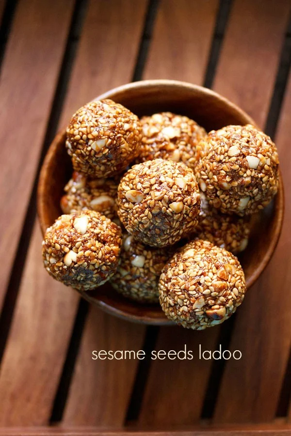
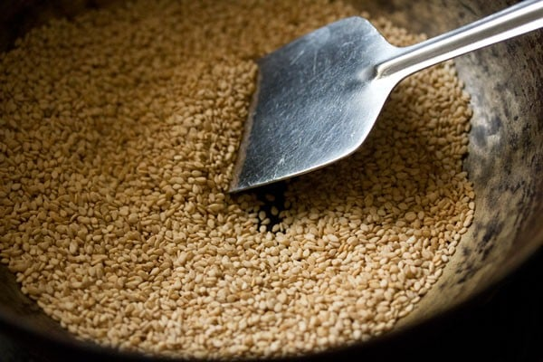
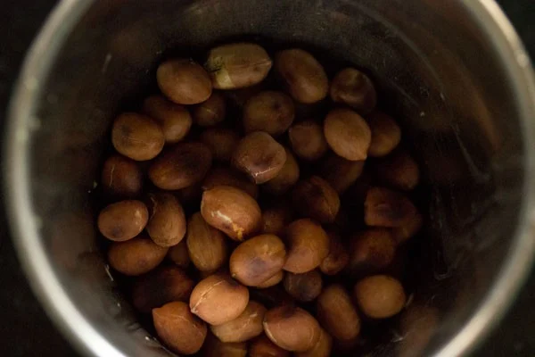
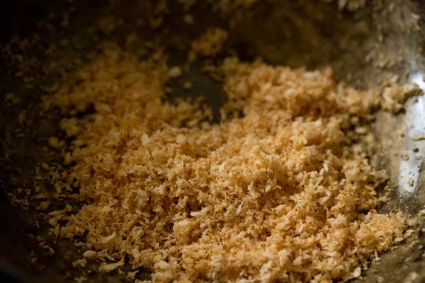
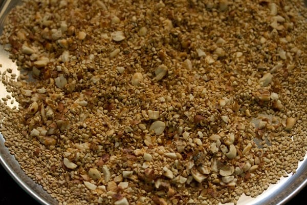
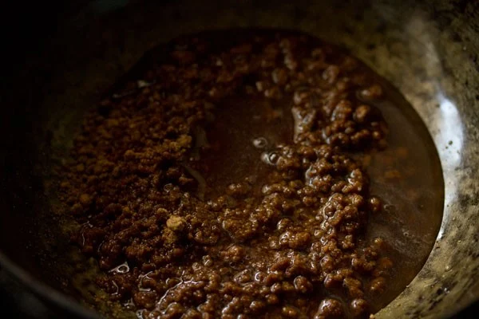
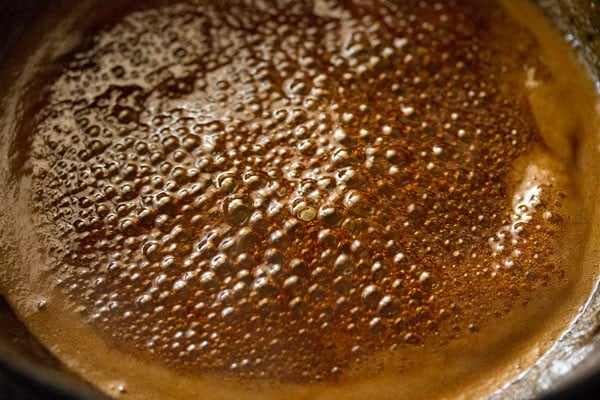
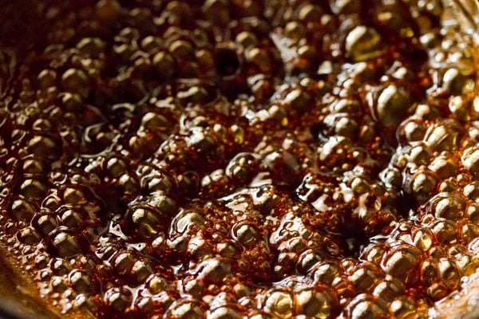
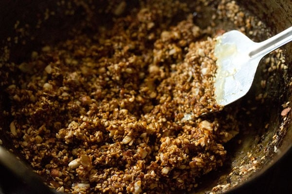
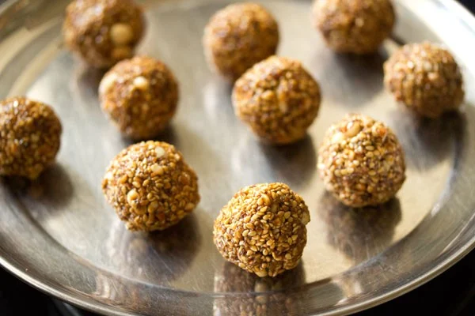

Til Ke Laddu | Sesame Laddu
When sesame seeds (til) and jaggery (gud or gur) come together, it’s just firework on the palate! Just like this Sesame Laddu. No doubt, this is one of my favorite combinations, as not just supremely tasty, it is also a wholesome package. Apart from these 2 main ingredients, these Til Ke Laddu also have peanuts and coconut which only enhance the flavor and makes these nutty laddus, a loved one. This sweet is a Makar Sankranti special as well as a vegan recipe.
How to make Til Ke Laddu
Roast Sesame Seeds
1. Heat a kadai or pan and add ⅓ cup sesame seeds to it. The pan should not be too hot, but on low heat.
2. On low heat, roast the sesame seeds. Stir at intervals.
3. The sesame seeds pop and change color. On low heat, this takes about 2 to 3 minutes. Do not brown them.
4. Once the sesame seeds are roasted well, remove them and keep aside on a plate.
Roast Peanuts
5. Next, add ¼ cup peanuts to the same pan. These are raw peanuts and not toasted or salted peanuts.
6. Dry roast the peanuts on low heat till they become crunchy and get a few black spots or blisters on them. Stir often.
7. Remove the peanuts in a mortar pestle. Allow to cool. If you want, you can remove the peanut skins by rubbing them between your palms, once they are cooled.
Roast Desiccated Coconut
8. In the same pan, add ¼ cup desiccated coconut.
9. Stir continuously while roasting the coconut.
10. Roast the coconut until it becomes light golden or golden. Switch off the heat.
Make Laddu Mixture
11. Add the roasted coconut to the roasted sesame seeds.
12. When the peanuts have cooled, crush them coarsely. You can also crush them in a blender or spice grinder.
13. Add the coarsely crushed peanuts to the roasted coconut and sesame seeds.
Make Jaggery Syrup
14. In the same pan or kadai, take ½ heaped cup powdered jaggery or grated jaggery. You can use jaggery powder, like I have done or chop or grate a jaggery block.
The special soft and sticky jaggery called “chikki jaggery” can also be used to make these ladoos.
15. Add 3 tablespoons water.
16. Keep the kadai or pan on the stovetop on low heat.
17. Keep on stirring the jaggery so that it dissolves.
20. On low heat, simmer the jaggery syrup. It will start bubbling first.
21. You have to cook until the jaggery syrup comes to a soft ball stage. Keep stirring non-stop.
22. To check the soft ball stage, take some water in a small bowl. Drop a bit of jaggery solution in the water. Remove it. It should be sticky and form itself into a soft ball.
23. At this consistency in the picture below, the soft ball stage had reached in the jaggery syrup.
Make Til Ke Laddu
24. At this stage, switch off the heat and add the roasted mixture of sesame seeds, desiccated coconut
25. Mix the roasted mixture with the jaggery solution quickly and thoroughly.
26. Keep the pan on your kitchen countertop or work surface.
27. When the mixture is still hot, begin to form and shape ladoos from it. If it is too hot, wait for a minute and then form the ladoos.
Spread some oil or water in your palms to form the ladoos. If you are not able to shape when the mixture is too hot, wait for some seconds and then make the Sesame Laddu.
28. You can also use a ½ to 1 tablespoon measure spoon, for scooping the mixture and making the ladoo. Then, just shape the ladoos once you scoop them out.
Do shape, when the mixture is hot. If the mixture cools down, then the Til Ke Laddu cannot be made.
29. For the last batch, scrape the sides very well and then make ladoos from it.
30. Make Sesame Laddus this way. Store in an air-tight jar at room temperature.
31. Serve Til Ke Laddu during Makar Sankranti festival or have them as a sweet snack.
You can easily double or triple the recipe and make a large batch that can be stored in an air-tight container for a couple of weeks.